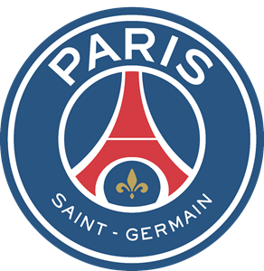
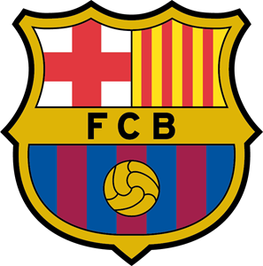
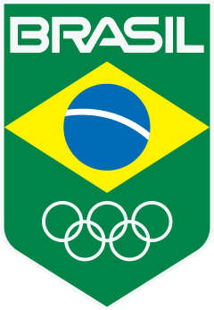

Neymar (1992) and a Brazilian footballer, considered one of the greatest in history. He won several titles playing for Santos Futebol Clube, where he started from 11 years of age. Your position is attacking. Controversial player dated a minor of 17 years, with whom he has a child. Signed contract with Barcelona, Spain. Neymar (1992) (Neymar da Silva Santos Júnior) was born in Mogi das Cruzes, São Paulo, on February 5, 1992. He already called attention of soccer experts when he was only 11 years old, when he was discovered by Santos scouts . The boy Neymar played in the Portuguese Santos, but was soon called by the Santos Football Club to be part of the base divisions of soccer time. In 2009, Neymar made his debut without professional time, in the match against the West, in the Pacaembu stadium, for the Paulista championship. He was considered revelation player of the championship, when Santos won his runner-up. In 2010, it was again highlight, this time, having his time become sacred champion of São Paulo. In that championship, Neymar scored five goals in five classics, a feat achieved by a seldom seen regularity in other players. Not even the same year, he won the Copa do Brasil, a scoreless tournament for top scorer with eleven goals. In 2011, he was a two time champion. In the same year, was champion of the Liberators Cup in the final with Peñarol, having made one of the goals, winning 2 x 1. Also in 2010, he was called up by coach Mano Menezes to play for the Brazil national team, where he played several friendlies. Another great accomplishment of Neymar was the Sub 20 Championship of 2011, where Brazil was champion. His controversial and voluntary behavior culminated in the dismissal of coach Dorival Júnior, of Santos, why this aesthetic prohibited or player of number battery, which provoked fights and curses. Santos refused a 35 million bid, offered by the English team Chelsea, for a purchase of Neymar. Today, the player is considered one of the best players in Brazilian history, in a group composed of Pele, Zico and Ronaldo. In March 2013 Neymar was hired by Barcelona. In his official presentation of the player was received at the Camp Nou by about 56 thousand fans.
Paris Saint-Germain 
Barcelona 
Brazilian Team 
Brazilian Team Under-17
Santos Soccer Club
Basic Categories Santos Soccer Club